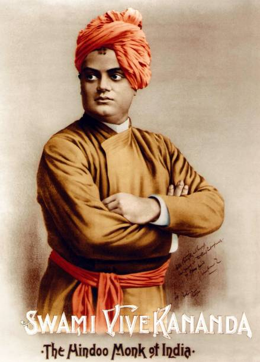

SWAMI VIVEKANANDA
1863-1902
Narendranath Datta
Swami Vivekananda (/ˈswɑːmi ˌvɪveɪˈkɑːnəndə/; Bengali: [ʃami bibekanɔndo] ⓘ; IAST: Svāmī Vivekānanda ; 12 January 1863 – 4 July 1902), born Narendranath Datta (Bengali: [nɔrendronatʰ dɔto]), was an Indian Hindu monk, philosopher, author, religious teacher, and the chief disciple of the Indian mystic Ramakrishna.[4][5] He was a key figure in the introduction of Vedanta and Yoga to the Western world,[6][7][8] and is the father of modern Indian nationalism who is credited with raising interfaith awareness and bringing Hinduism to the status of a major world religion in the late nineteenth century.[9]
Biographies
- A Biography of Swami Vivekananda
- A comprehensive biography of Swami Vivekananda
- A Short Life of Swami Vivekananda